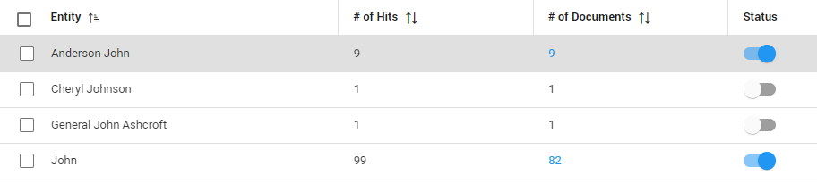

Only enabled entities will be extracted/shown in Document View.
Single entities can be enabled/disabled with the status button.


On the Entity Management page, all entity types can be viewed–including, for instance, persons, locations, countries, dates, and many more. Select the Phone option to view all different phone numbers, how many times those numbers are present (the hits),
and in how many different documents. The results can be exported to Excel or CSV.
The user can turn a certain entity on or off. This will affect whether the entity will be highlighted and redacted
in the documents (or not). View a list of all extraction types. Per extraction type, you can enable/disable entities that extract data. For example, you might want to disable an entity when that extracted data is not relevant at this moment.
Instructions
Switch to the Library/Manage Extractions/Consumption Overview (top right corner)